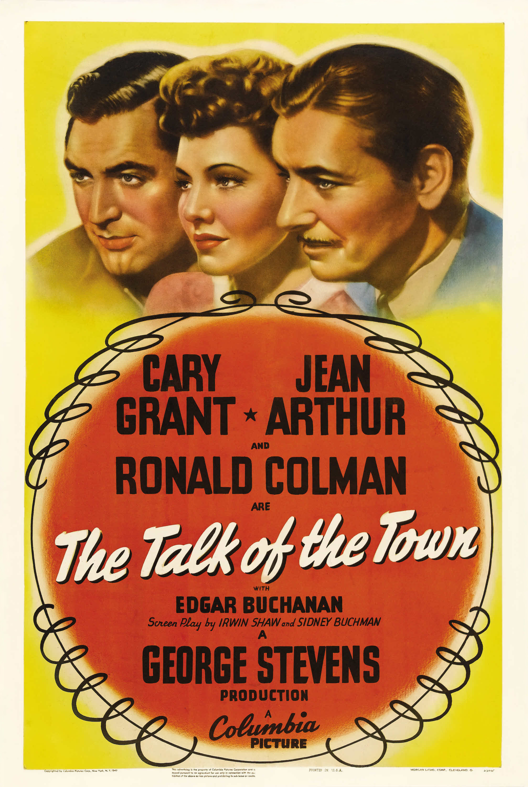

The Talk of the Town
15th Academy Awards
(Oscars 1943)
7 Nominations, 0 Awards
| Nominations | ||
|---|---|---|
| Category | Nominees | Result |
| Outstanding Motion Picture | Columbia | Nominated |
| Writing (Original Motion Picture Story) | Sidney Harmon | Nominated |
| Writing (Screenplay) | Irwin Shaw and Sidney Buchman | Nominated |
| Cinematography (Black-and-White) | Ted Tetzlaff | Nominated |
| Film Editing | Otto Meyer | Nominated |
| Art Direction (Black-and-White) | Fay Babcock, Lionel Banks, and Rudolph Sternad | Nominated |
| Music (Music Score of a Dramatic or Comedy Picture) | Frederick Hollander and Morris Stoloff | Nominated |